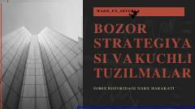

BSForex bozorida narx harakati va savdo strategiyalarini o'rganish bo'yicha qo'llanma.
Ushbu qo'llanma Forex bozoridagi narx harakatlari, bozor strukturasi va likvidlik tushunchalarini tahlil qiladi. Kitobda savdo strategiyalari, sessiyalar va kuchli tuzilmalarni aniqlash bo'yicha amaliy tavsiyalar berilgan.